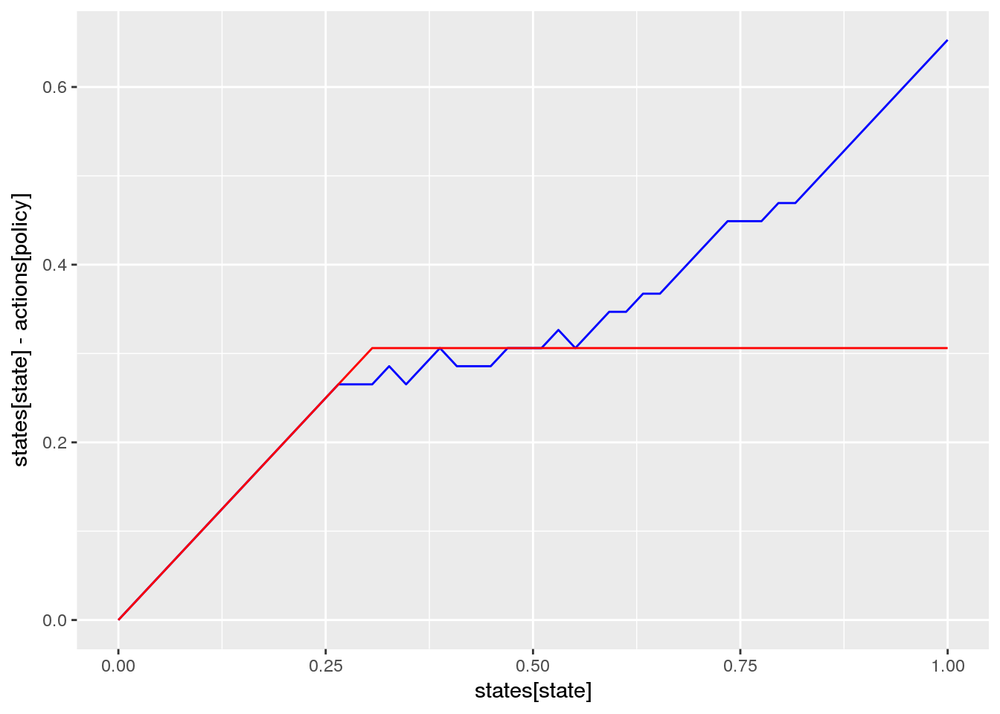
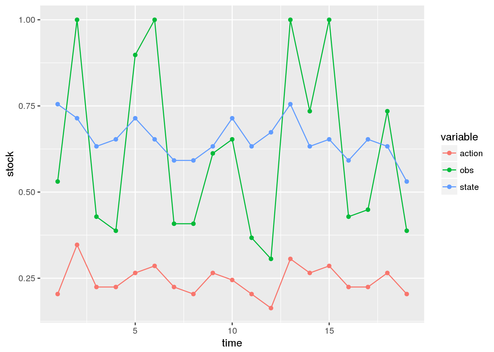
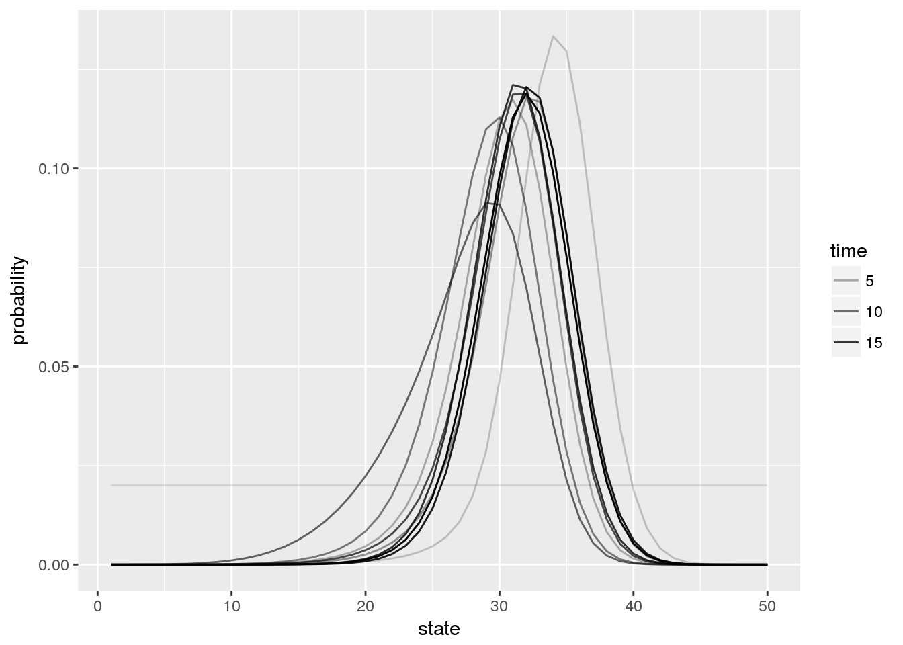

knitr::opts_chunk$set(fig.width = 7)Here we compare the Markov Decision Process (MDP) solution of the classic optimal harvest problem in fisheries (Reed 1979) to the corresponding solution under measurment uncertainty, the Partially Observed Markov Decision Process (POMDP) problem. The classic problem can be solved exactly for a discrete model using Stochastic Dynamic Programming. Here we demonstrate a computationally efficient approximate solution using the point-based SARSOP algorithm for POMDP, implemented in C++ in by the APPL software and provided here as an R package. We will first set up the problem, then present the analytic solution to deterministic problem, followed by the MDP solution to the stochastic problem. As Reed proved in 1979, these solutions are identical as long as the stochasticity is small enough for the population to meet the self-sustaining criterion. We then introduce measurement uncertainty and illustrate the resulting POMDP solution, discussing some of issues the user should be aware of when utilizing these approximate algorithms.
library(appl)
library(tidyverse) # for plottingOur problem is defined by a state space, states, representing the true fish stock size (in arbitrary units), and an action space, actions representing the number of fish that will be harvested (or attempted to harvest).
For simplicitly, we will permit any action from 0 harvest to the maximum possible state size.
A stock recruitment function, f describes the expected future state given the current state. The true future state will be a stochastic draw with this mean.
A reward function determines the value of taking action of harvesting h fish when stock size is x fish; for simplicity this example assumes a fixed price per unit harvest, with no cost on harvesting effort. Future rewards are discounted.
states <- seq(0,1, length=50)
actions <- states
observations <- states
sigma_g <- 0.1
sigma_m <- 0.5
reward_fn <- function(x,h) pmin(x,h) # - .001*h
discount <- 0.95
r <- 1
K <- 0.75
f <- function(x, h){
s <- pmax(x - h, 0)
s * exp(r * (1 - s / K) )
}For comparison, we note that an exact solution to the deterministic or low-noise problem comes from Reed 1979, which proves that a constant escapement policy \(S^*\) is optimal, with \(\tfrac{df}{dx}|_{x = S^*} = 1/\gamma\) for discount \(\gamma\),
S_star <- optimize(function(x) -f(x,0) + x / discount,
c(min(states),max(states)))$minimum
det_policy <- sapply(states, function(x) if(x < S_star) 0 else x - S_star)
det_action <- sapply(det_policy, function(x) which.min(abs(actions - x)))When the state is observed without error, the problem is a Markov Decision Process (MDP) and can be solved by stochastic dynamic programming (e.g. policy iteration) over the discrete state and action space. To do so, we need matrix representations of the above transition function and reward function.
appl provides a convenience function for generating transition, observation, and reward matrices given these parameters for the fisheries management problem:
m <- fisheries_matrices(states, actions, observations, reward_fn,
f, sigma_g, sigma_m, noise = "lognormal")In the POMDP problem, the true state is unknown, but measured imperfectly. We introduce an observation matrix to indicate the probabilty of observing a particular state \(y\) given a true state \(x\). In principle this could depend on the action taken as well, though for simplicity we assume only a log-normal measurement error independent of the action chosen.
Long-running code to actually compute the solution.
log_data <- data.frame(id = "vignette", model = "ricker",
r = r, K = K, sigma_g = sigma_g, sigma_m = sigma_m)
alpha <- sarsop(m$transition, m$observation, m$reward, discount,
log_data = log_data, log_dir = ".",
precision = .1, timeout = 20000)appl logs solution files in a specificied directory, along with a metadata table. The metadata table makes it convenient to store multiple solutions in a single directory, and load the desired solution later using it’s id or matching metatata. We can read this solution from the log where it is stored:
log_dir <- system.file("ext-data/vignette-log", package="appl")
meta <- meta_from_log(data.frame(id = "vignette"), log_dir)
alpha <- alphas_from_log(meta, log_dir)[[1]] ## bc fn returns a list with all matching alphas, we need [[1]]Given the model matrices and alpha vectors. Start belief with a uniform prior over states, compute & plot policy:
state_prior = rep(1, length(states)) / length(states) # initial belief
df <- compute_policy(alpha, m$transition, m$observation, m$reward, state_prior)
## append deterministic action
df$det <- det_actionggplot(df, aes(states[state], states[state] - actions[policy])) +
geom_line(col='blue') +
geom_line(aes(y = states[state] - actions[det]), col='red')
Simulate management under the POMDP policy:
x0 <- which.min(abs(states - K))
Tmax <- 20
sim <- sim_pomdp(m$transition, m$observation, m$reward, discount,
state_prior, x0 = x0, Tmax = Tmax, alpha = alpha)Plot simulation data:
sim$df %>%
select(-value) %>%
mutate(state = states[state], action = actions[action], obs = observations[obs]) %>%
gather(variable, stock, -time) %>%
ggplot(aes(time, stock, color = variable)) + geom_line() + geom_point()
Plot belief evolution:
sim$state_posterior %>%
data.frame(time = 1:Tmax) %>%
filter(time %in% seq(1,Tmax, by = 2)) %>%
gather(state, probability, -time, factor_key =TRUE) %>%
mutate(state = as.numeric(state)) %>%
ggplot(aes(state, probability, group = time, alpha = time)) + geom_line()